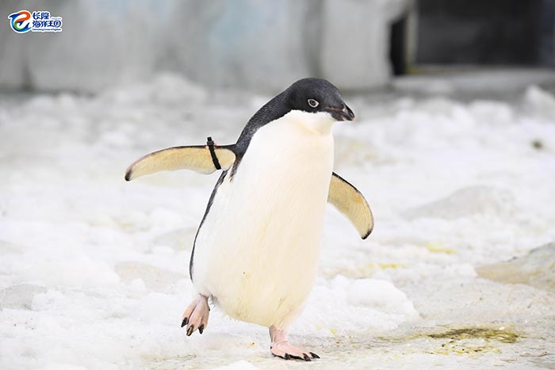
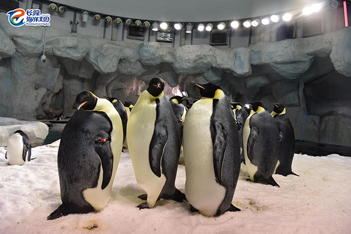

极地动物 - 企鹅
世界企鹅日的由来
每年4月25日是世界企鹅日，它的起源也很有趣。最初，南极麦克默多站的科学家发现，每年4月25日，阿德利企鹅都会从这里向北迁徙。看起来懒懒的企鹅竟然还有这么准时的时候呢！为了记录这一现象，后来企鹅爱好者们就把每年的4月25日设为世界企鹅日。

（海洋王国拍摄 阿德利企鹅）
企鹅的多样性与保护现状
目前全世界现存的企鹅有18种，长隆拥有其中的7种，分别是帝企鹅、王企鹅、白眉企鹅、帽带企鹅、阿德利企鹅、麦哲伦企鹅、洪氏环企鹅。而根据世界自然保护联盟（IUCN）的濒危物种红色名录，帝企鹅、麦哲伦企鹅处于近危状态。
世界企鹅日的设立，也希望引起更多人关注这些“企鹅绅士”们的生存现状，了解企鹅面临的生存危机。
企鹅生存大挑战
在海洋王国人工保育下的企鹅得以繁衍生息、快乐成长，而野外生存的企鹅家族们正面临着各种各样的考验。
-
考验一：极地危机
世界气象组织发布的《2020年全球气候状况》报告指出，2020年是有记录以来三个最暖的年份之一。随着全球气候变暖，南极大陆延展出来的浮冰或冰川边缘的浮冰，在春季更早地融化，融化面积更大。这将导致企鹅栖息地不断减少，影响企鹅们的生存和繁殖。
-
考验二：食物锐减
有报告称，过去数十年中，由于全球气温变暖，南极一些地区冬季海冰形成时间延后，覆盖面积缩小，春季融化时间提前，影响了冰藻的繁殖，进而导致磷虾数量减少。企鹅将面临食物来源短缺的生存危机。
-
考验三：其他威胁
南极不仅是世界上最冷的地方，也是风力最大的地区。风力高达12级的暴风雪对于南极来说也只是家常便饭。但企鹅不仅生活在这样的恶劣环境下，还要抵抗天敌的伤害。这些考验对企鹅家族来说是一次次的生存大挑战。

（海洋王国拍摄 帝企鹅）